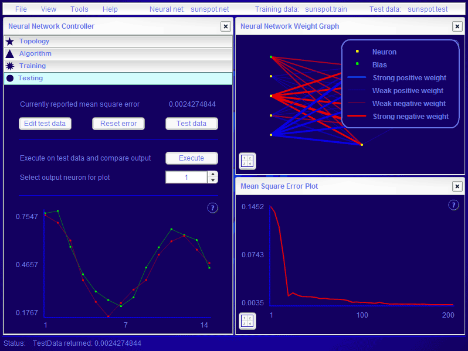

Bien, hasta aquí hemos visto que las máquinas pueden imitar comportamientos humanos para un gran número de tareas. De hecho, incluso pueden aplicarse algoritmos de aprendizaje que, para ciertas tareas como el spam, dan muy buenos resultados. La siguiente cuestión entonces es ¿pueden las máquinas pensar tal y como lo hacemos los humanos?
La naturaleza nos ha dotado con un sistema de cómputo basado en una enorme red de neuronas. Si las máquinas pudieran simular tal sistema de cómputo ¿no estarían entonces en condiciones de pensar tal y como lo hacemos las personas?
En primer lugar, pensemos qué es una neurona. Una neurona está formada por el cuerpo celular y diferentes prolongaciones: el axón, por el que transitan los impulsos nerviosos o potenciales de acción desde el cuerpo celular hacia la siguiente célula, y la/s dendritas, con número y estructura variable según el tipo de neurona, y que transmiten los potenciales de acción desde las neuronas adyacentes hacia el cuerpo celular. Se podría decir que las dendritas son entradas y el axón es la salida.
Ahora bien, ¿cómo se decide si tras recibir entradas se produce o no una salida, y qué salida se produce? Pues bien, la salida es la suma ponderada de las entradas seguida de una función umbral. Esto puede parecer un diodo: si el potencial de las entradas alcanza un cierto valor, entonces se produce la salida, y sino no. Sin embargo, difiere en ser ponderado. Se refiere a que no todos los valores de las entradas van a tener la misma importancia de cara a decidir si se produce o no la salida.
Si nuestra neurona no es más que un diodo con entradas ponderadas, entonces juntando unos diodos con otros en forma de red ¿hará el tipo de procesos que realizamos los humanos como, por ejemplo, aprender? Es curioso que para aprender solo es necesaria una neurona, y el aprendizaje consiste en modificar el valor de los pesos (la importancia de cada entrada) aplicando un algoritmo a nuestro valor de salida. ¿Y cual será ese algoritmo? Un psicólogo llamado Donald O. Hebb enunció una regla que dice que "las conexiones que unen diferentes neuronas que se encuentran activas en un instante dado se fortalecen". Se refiere a que si la neurona está transmitiendo, las entradas que están activas tendrán más importancia de la que ya tenían. Y esto es más ó menos la esencia de la computación neuronal, especialmente la no supervisada (que no requiere de un tutor), y esta es la que nos encontramos en la naturaleza.
Pero en la práctica las redes neuronales artificiales no han creado en las máquinas comportamientos similares a los de las personas. Sin embargo, lo cierto es que los problemas que tradicionalmente son más complejos para las máquinas (visión artificial, reconocimiento del habla, etc.), se resuelven mejor utilizando redes neuronales que mediante otras perspectivas simbólicas.
La computación neuronal tiene como tarea genérica la clasificación. Por ejemplo, pensemos que queremos averiguar en qué imágenes está Wally y en qué imágenes no. Nuestras entradas serían las intensidades RGB de cada pixel de cada una de las imágenes, y tendría una única salida que nos diría si está o no.
Las redes neuronales tienen un modelo inherentemente distribuido, puesto que un procesador puede simular una neurona. Así mismo, son autoprogramables. La programación pasa por elegir un número de neuronas, las conexiones entre las mismas, un número de salidas, un número de entradas y una configuración inicial de pesos. Después bastaría con alimentarla correctamente y, si el aprendizaje es supervisado, darle la adecuada realimentación humana
Como siempre, para profundizar recomiendo jugar con el software libre disponible. Lo que he encontrado ha sido Fast Artificial Neural Network Library (fann), Genesis y, aunque no totalmente libre, también creo importante destacar SNNS.
Finalizar diciendo que, si bien los algoritmos de redes neuronales no son otra cosa que algoritmos de aprendizaje automático, debido a las implicaciones filosóficas que tienen he decidido tratarlo aparte.

Pantallazo de fann en ejecución